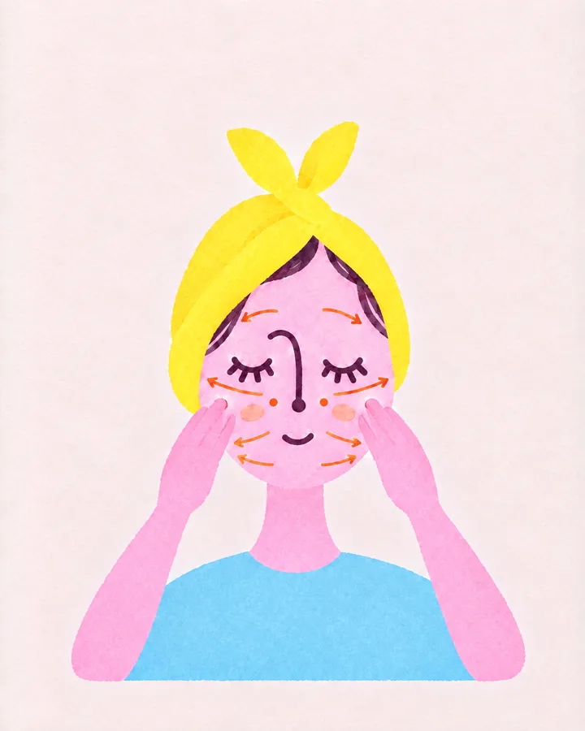
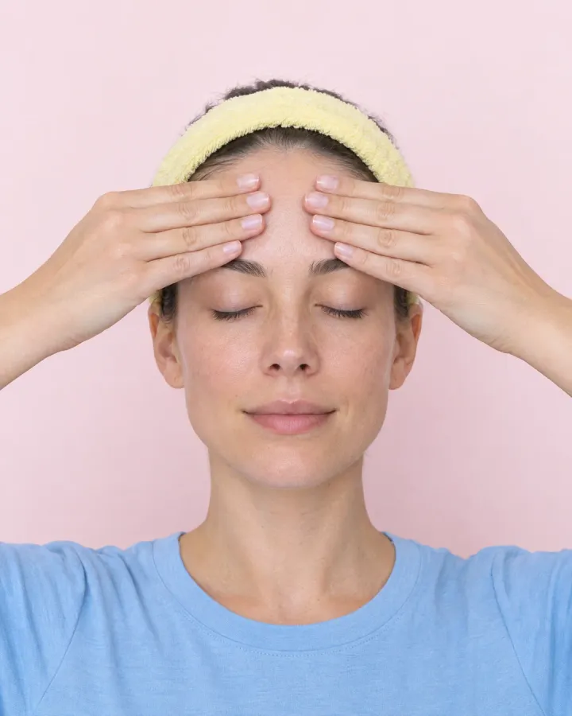

Before

After

01
Drawings → photos
FailedA drawn character with mitten hands. Lovely, but you can’t tell which finger goes where.
ChangedRealistic AI starter frames with one fixed setup. 12 stills cover all 18 steps.